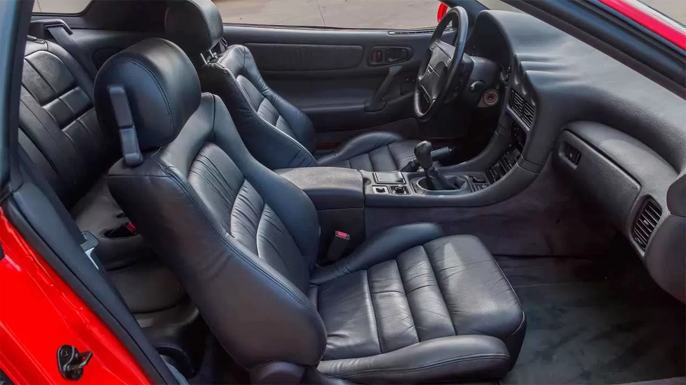
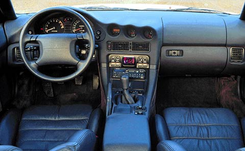

8 800 200-05-25
8 800 200-05-25

Внутри салона все не так-то просто. Высота автомобиля – 1285 мм. Водительское кресло двигается вперед и назад, опускать его можно с помощью электрического привода, который управляется рычажком на подушке сбоку. Спинку можно наклонить рукояткой. В сидении с кожаной обивкой отличная боковая поддержка и настраиваемая поясничная опора и спинной зажим. Эти элементы настраиваются джойстиком.
Обзор с места водителя очень приличен, стойки крыши не мешают смотреть в обе стороны, широкая дверь с треугольным стеклом, благодаря чему отлично видно то, что происходит сзади. Сзади могут сидеть только люди небольшого роста, а если сидящие впереди немного подвинутся, то здесь можно уместить 2 больших чемодана. В багажник положить что-то большое невозможно, потому как он совсем небольшой из-за большого бачка.

Руль регулируется, его можно поднимать и даже опускать. Его очень приятно держать в руках, он не загораживает приборы. Торпеда изготовлена из хорошего пластика, в подлокотниках – мягкие вставки из кожи. Справа от козырька можно заметить манометр, индикатор давления и цифровые часы. Справа от руля имеется рычаг для управления круиз-контролем. Клавиша справа управляет щеткой заднего стекла.
В районе педалей ногам удобно и просторно, усиление на педали сцепления немного больше, чем у обычных машин, а ход чуть-чуть короче. Рычаг КП расположен удобно, в неработающем состоянии локоть правой руки лежит на обивке тоннеля, то есть на крышке ящичка для всякой мелочевки между сидениями.
https://autoiwc.ru/mitsubishi/mitsubishi-3000-gt.html
Источники: